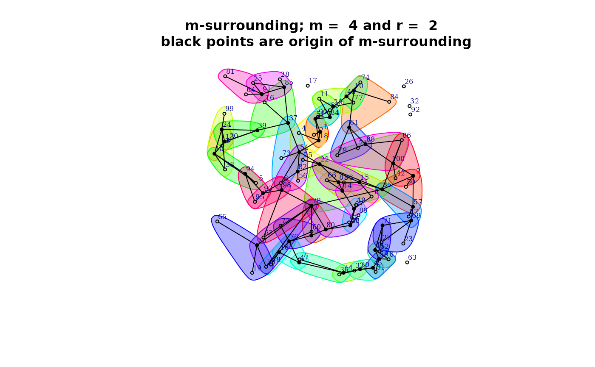
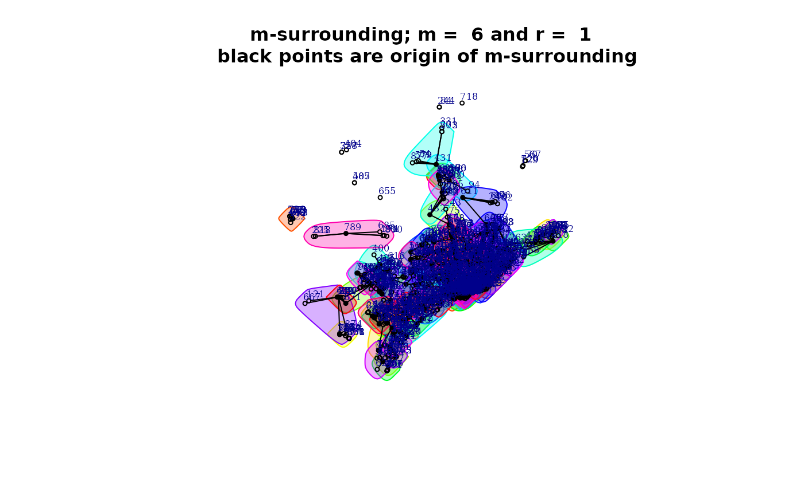

Method for class m_surr
methods_m_surr.RdA function to plots the m-surround give an object of the
class m_surr obtain with the code m.surround.
The plot() function allows the user view the configuration of the m-surrounding.
The argument type select the type o visualization.
The print() print the matrix of the m-surrounding.
.
The summary give information about the characteristics of th m-surrounding
.
Arguments
- object
object of class m_surr. 2 plot W matrix with network
- ...
further arguments passed to or from other methods.
- x
object of class m_surr
- type
numeric. 1 (default) to get the plot with igraph.
References
Ruiz, M., López, F., and Páez, A. (2021). A test for global and local homogeneity of categorical data based on spatial runs. Working paper.
Author
| Fernando López | fernando.lopez@upct.es |
| Román Mínguez | roman.minguez@uclm.es |
| Antonio Páez | paezha@gmail.com |
| Manuel Ruiz | manuel.ruiz@upct.es |
Examples
# Example 1: Obtain m-surroundings with degree of overlapping r
N <- 100
cx <- runif(N)
cy <- runif(N)
x <- cbind(cx,cy)
m = 4
r = 2
msurr_points <- m.surround(x = x, m = m, r = r,control = list(dtmaxabs = 0.5))
#>
#> Threshold distance: 0.5
#> Number of m-surroundings excluded for exceeding
#> the threshold distance: 2
#>
#> Index of spatial observations excluded: 39 33
plot(msurr_points, type = 1)

plot(msurr_points, type = 2)
print(msurr_points)
#> [,1] [,2] [,3] [,4]
#> [1,] 1 62 80 94
#> [2,] 7 6 63 69
#> [3,] 8 34 46 64
#> [4,] 11 83 75 28
#> [5,] 12 32 84 76
#> [6,] 15 61 12 32
#> [7,] 17 58 20 40
#> [8,] 18 5 23 27
#> [9,] 20 40 98 86
#> [10,] 23 97 27 28
#> [11,] 24 70 68 41
#> [12,] 25 21 64 76
#> [13,] 26 2 8 64
#> [14,] 27 85 33 95
#> [15,] 29 93 65 49
#> [16,] 30 19 25 64
#> [17,] 33 95 72 16
#> [18,] 37 87 29 93
#> [19,] 38 51 50 82
#> [20,] 39 78 57 42
#> [21,] 41 43 89 73
#> [22,] 44 53 55 66
#> [23,] 45 14 99 44
#> [24,] 46 3 56 45
#> [25,] 47 71 77 52
#> [26,] 48 88 54 28
#> [27,] 50 79 59 7
#> [28,] 54 92 91 23
#> [29,] 55 36 66 81
#> [30,] 56 60 45 14
#> [31,] 57 42 41 43
#> [32,] 59 82 26 64
#> [33,] 64 67 7 6
#> [34,] 65 49 17 58
#> [35,] 66 81 37 87
#> [36,] 68 74 96 39
#> [37,] 72 16 11 30
#> [38,] 77 52 38 51
#> [39,] 80 94 24 70
#> [40,] 84 31 48 28
#> [41,] 89 73 90 4
#> [42,] 90 4 100 35
#> [43,] 91 22 18 5
#> [44,] 96 9 39 78
#> [45,] 98 86 15 61
#> [46,] 99 10 44 65
#> [47,] 100 35 47 71
# Example 2:
data("FastFood.sf")
m = 6
r = 1
msurr_points <- m.surround(x = FastFood.sf, m = m, r = r, distance = "Euclidean",
control = list(dtmaxpc = .01))
#> Warning: bounding box has potentially an invalid value range for longlat data
#>
#> Threshold distance: 1054.512
#> Number of m-surroundings excluded for exceeding
#> the threshold distance: 154
#>
#> Index of spatial observations excluded: 6 12 19 25 27 29 32 36 40 46 49 55 57 58 59 60 61 63 74 75 80 83 85 86 88 89 91 100 101 102 105 110 111 112 113 118 119 120 122 123 124 125 128 131 137 138 143 144 147 150 151 155 156 157 160 164 165 168 171 173 174 2 3 5 7 8 17 20 21 22 23 24 33 34 38 51 54 62 64 65 68 69 76 77 78 98 99 103 107 109 114 115 126 132 133 135 139 140 141 149 154 159 161 162 163 167 170 172 175 9 13 16 26 31 35 37 39 41 43 47 52 56 67 70 71 73 79 92 93 106 121 134 136 153 166 4 42 53 66 72 82 84 87 90 96 142 148 18 28 30 81 108 129 152
plot(msurr_points, type = 1)

plot(msurr_points, type = 2)
#> Warning: bounding box has potentially an invalid value range for longlat data
print(msurr_points)
#> [,1] [,2] [,3] [,4] [,5] [,6]
#> [1,] 1 180 675 719 471 294
#> [2,] 39 352 693 615 402 469
#> [3,] 40 807 745 496 592 512
#> [4,] 63 738 612 186 53 796
#> [5,] 74 721 751 48 165 500
#> [6,] 208 699 601 648 824 778
#> [7,] 209 642 397 752 509 483
#> [8,] 221 153 477 797 584 594
#> [9,] 226 61 122 607 617 765
#> [10,] 483 131 339 116 229 63
#> [11,] 500 764 166 559 373 310
#> [12,] 505 744 47 367 706 209
#> [13,] 529 622 412 93 248 398
#> [14,] 593 97 613 403 575 221
#> [15,] 594 105 753 396 35 208
#> [16,] 645 106 585 596 610 510
#> [17,] 657 488 133 792 489 479
#> [18,] 763 499 630 743 58 74
#> [19,] 765 849 68 152 600 763
#> [20,] 796 115 588 597 843 226
#> [21,] 832 387 654 60 757 516